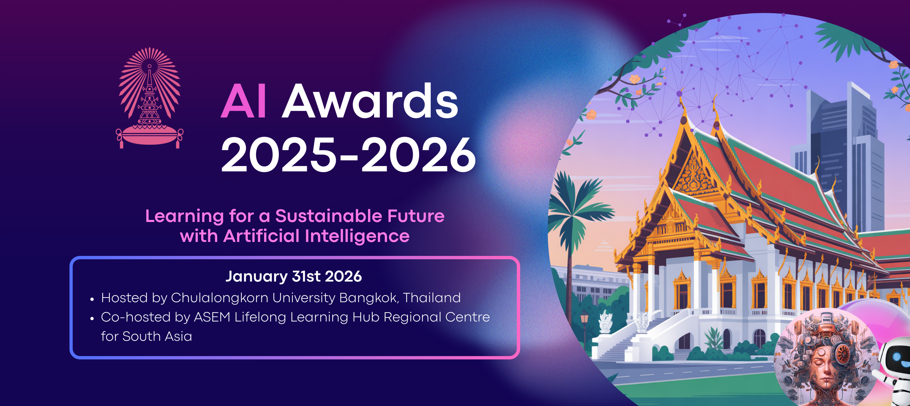

Awards
January 31, 2026
AI Awards
The AI Awards 2025-26 celebrate the innovators, visionaries, and change makers redefining what's possible with AI and highlight the most exceptional AI-driven educational solutions that enhance learning experiences across ages and contexts. They aim to foster a global community of researchers, educators and learners passionate about AI driven solutions for lifelong learning sustainably, promote responsible development and adoption of AI tools, inspire innovation, creativity and inclusion in education across formal, non-formal and informal settings, and disseminate the best practices in AI-powered teaching and learning.
See Awards Details